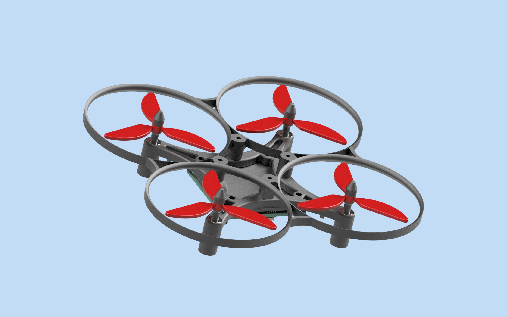

Custom Mini Drone
2025 | In Progress
For this project I attempted to make a mini drone fully from scratch, including the CAD, electrical layout, and controls. This project gave me valuable experience with integrating electrical, mechanical, and software systems.
Perf board prototype
I soldered a prototype flight controller board for initial testing. The board was ESP32 based and communicated with an MPU6050 accelerometer using I2C. The motors are driven with MOSFETs


Controls setup
I used the built in DLPF on the IMU to get clean data readings and sent them to an ESP32 webserver to visualize the pitch and roll in 3D

This controls page featured a re-zeroing function that averages the past 10 IMU readings to zero, PWM motor control, and IMU data logging.
CAD Design:
For the CAD design, I tried to make something easily 3D-printable and repairable, while also being lightweight with propeller guards for safety purposes.

Custom flight controller PCB
After verifying that the perf board and schematic worked, I designed a more compact flight controller PCB. It's STM-32 based and uses a shared SPI bus to communicate with a BMI270 IMU and an NRF24L01 radio module. Additionally it features bidirectional DRV motor drivers and onboard status LED's
Additionally I designed a simple driver board for the BMI270 IMU so I could easily test it and write firmware quicker.
Quadcopter V2:
After some unsuccessful flight tests, I realized I would have to make some modifications to be able to achieve flight.
I started by designing a lower profile flight controller PCB which used the smaller ESP32-XIAO C6 microcontroller.


Initial thrust:
The pcb allowed for a much smaller and more symmetrical footprint. Additionally, I switched to smaller propellers.